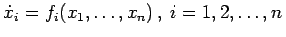
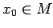

Inhalt Index DeskTop Bronstein

 Dynamische Systeme und Chaos Gewöhnliche Differentialgleichungen und Abbildungen Dynamische Systeme Grundbegriffe
Dynamische Systeme und Chaos Gewöhnliche Differentialgleichungen und Abbildungen Dynamische Systeme Grundbegriffe


Gegeben sei eine gewöhnliche Differentialgleichung
wobei (Vektorfeld) eine r-mal stetig differenzierbare Abbildung ist und oder eine offene Teilmenge des  darstellt. Im weiteren wird im
darstellt. Im weiteren wird im  stets die EUKLIDische Norm
stets die EUKLIDische Norm  benutzt, d.h., für beliebiges ist .
benutzt, d.h., für beliebiges ist .
Schreibt man die Abbildung f in Komponenten als , so ist (17.1) das System aus den n skalaren Differentialgleichungen .
Die Sätze über die lokal eindeutige Lösbarkeit von PICARD-LINDELÖF und über die r-malige Differenzierbarkeit nach den Anfangsbedingungen (s. Lit. 17.5) garantieren, daß für jedes  eine Zahl , eine Kugel  aus M und eine Abbildung existieren, so daß gilt:
aus M und eine Abbildung existieren, so daß gilt:
Alle lokalen Lösungen von (17.1) seien eindeutig auf ganz  fortsetzbar. Dann gibt es zu jeder Differentialgleichung (17.1) eine Abbildung mit folgenden Eigenschaften:
fortsetzbar. Dann gibt es zu jeder Differentialgleichung (17.1) eine Abbildung mit folgenden Eigenschaften:
In dem folgenden Beispiel wird das LORENZ-System betrachtet.
| Beispiel |
heißt LORENZ-System der konvektiven Turbulenz. Dabei sind und b > 0 Parameter. Dem LORENZ-System entspricht ein -Fluß in .